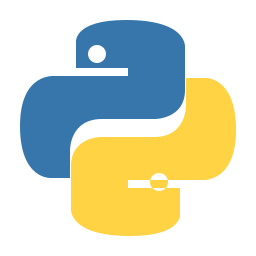

JASSI.EXE / HOME / OVERVIEW INDIA / IST
AVAILABLE FOR COLLABORATION INDIA / IST
HELLO, WORLD. I'M
JASPRITSINGHCHOPRA_
[PYTHON DEVELOPER]
I build Discord bots, automate communities, and turn ideas into systems people actually use. Founder & developer at Oxalic Lab.
3 YEARS OF BUILDINGPYTHON / DISCORD.PY / ASYNCIO

PYTHONPRIMARY STACKBUILD STATUSONLINE
01001010
01000001
01010011
01000001
01010011
FIG. 001 — THE BUILDER
SCROLL TO EXPLORE
NAVIGATECHOOSE YOUR DESTINATION
OPEN MODULE ↗ABOUTProfile, skills & journeyOPEN MODULE ↗PROJECTSExplore all four Discord botsOPEN MODULE ↗OXALIC LABThe team behind the ecosystemOPEN MODULE ↗TERMINALTry the interactive command simulatorOPEN MODULE ↗GITHUBPublic repositories & activityOPEN MODULE ↗ACHIEVEMENTSMilestones and progressOPEN MODULE ↗CONTACTStart a conversation